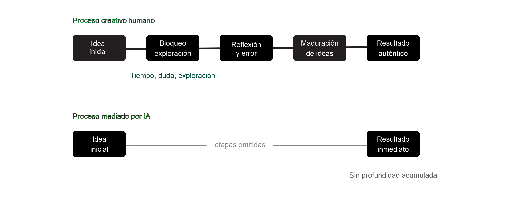
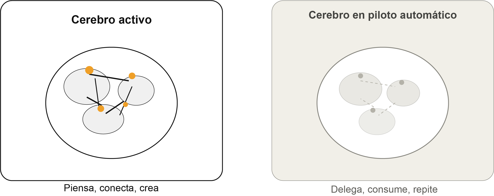
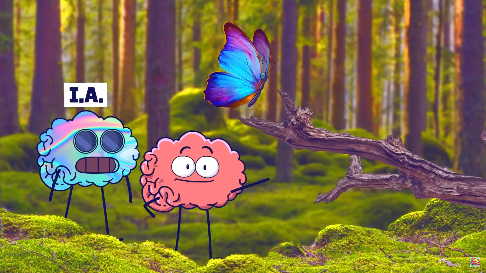

Creatividad y cognición
Procesos creativos mediados por la IA: ¿aceleración o vaciamiento?
Vivimos en una época donde la velocidad se confunde con la eficiencia. Y la inteligencia artificial, en ese contexto, se presenta como la solución perfecta: más rápido, más prolijo, más inmediato. Pero cuando esa lógica se aplica a los procesos creativos, aparece una pregunta que vale la pena hacerse en serio ¿Qué se pierde cuando se acelera algo que, por naturaleza, necesita tiempo?
La creatividad no es una tarea que se completa. Es un proceso que se atraviesa. Requiere momentos de confusión, de duda, de exploración sin destino claro. Requiere, incluso, aburrimiento. Ese estado incómodo en el que la mente no tiene estímulos externos y empieza a generar los propios es, el punto mas importante. El aburrimiento es parte más enriquecedora del camino, no un obstáculo.
Y una herramienta que promete eliminar la espera en este largo camino también elimina, sin querer, lo que este produce.

La trampa de la velocidad
La capacidad de la IA para acelerar tareas es, sin dudas, uno de sus atributos más valorados. En contextos académicos y profesionales donde los tiempos son ajustados y las demandas son altas, poder generar un borrador, organizar ideas o corregir un texto en cuestión de segundos representa una ventaja real. El problema no es la velocidad en sí misma. El problema es lo que se deja atrás cuando se prioriza por encima de todo lo demás.
La maduración de una idea no es un proceso que pueda comprimirse sin consecuencias. Una producción creativa que se construye con tiempo, con idas y vueltas, con versiones descartadas, con momentos de bloqueo que eventualmente se resuelven. Acumula en ese recorrido una densidad que no tiene otra forma de generarse. Cuando ese proceso se acorta artificialmente, el resultado puede ser técnicamente correcto, pero le falta algo difícil de nombrar y fácil de notar: profundidad, carácter, una razón de ser que vaya más allá de cumplir con el formato esperado.
Reducir la creatividad a un producto inmediato es, en cierta forma, malentender qué es la creatividad. No es el resultado. Es el camino que lleva a él.
Si no se establece una distancia crítica entre el estudiante y la herramienta, lo 'auténtico' corre el riesgo de ser una ilusión.
"Estudiantes e Inteligencia Artificial: entre el apoyo tecnológico y el deterioro cognitivo. - UNRC"
El problema de la "autenticidad" generada
Uno de los argumentos más frecuentes a favor del uso de IA en procesos creativos es que ayuda a los estudiantes a expresar su voz única con mayor claridad y fluidez. La idea suena atractiva, pero merece ser examinada con cuidado.
Las herramientas de inteligencia artificial generan contenido a partir de patrones estadísticos extraídos de enormes volúmenes de texto producido por otras personas. Su funcionamiento consiste, esencialmente, en predecir qué combinación de palabras resulta más probable y coherente dado un determinado contexto. El resultado puede ser fluido, bien estructurado y gramaticalmente impecable. Pero no surge de una experiencia vivida, de una perspectiva formada a lo largo del tiempo ni de una mirada sobre el mundo que sea genuinamente propia.
La autenticidad, en cambio, tiene un origen muy diferente. Surge de la acumulación de experiencias personales, de la reflexión sobre lo vivido, del estilo que se construye equivocándose y corrigiéndose. Surge, también, de las decisiones que se toman conscientemente al escribir o crear, qué incluir, qué descartar, qué tono adoptar, qué postura defender. Ninguna de esas decisiones puede ser delegada sin que algo se pierda en el proceso.
Cuando un estudiante utiliza la IA para generar el núcleo de su producción — las ideas, la estructura, el desarrollo argumentativo — y luego ajusta detalles superficiales para personalizarla, el resultado no es auténtico con algunos retoques. Es contenido generado con una firma ajena. Y esa distinción importa, especialmente en disciplinas donde la voz propia no es un complemento del trabajo sino su razón de ser.
Pensar entonces una distancia crítica como condición necesaria, no implica que la IA no tenga lugar en los procesos creativos. Implica que ese lugar necesita ser definido con criterio. La diferencia entre un uso productivo y un uso que empobrece el proceso está, en gran medida, en la distancia crítica que el estudiante mantiene respecto a lo que la herramienta produce.
Esa distancia crítica significa no aceptar el primer resultado como definitivo. Significa cuestionar las ideas que la IA sugiere, evaluar si realmente representan lo que se quiere decir, reescribir con voz propia lo que la herramienta apenas esbozó. Significa, en definitiva, seguir siendo el autor, no el editor de un texto que alguien más, o algo más, escribió.
Cuando esa distancia desaparece, lo que queda puede parecerse mucho a un trabajo auténtico. Puede tener el formato correcto, la extensión adecuada, las referencias esperadas. Pero la autenticidad, en ese caso, es una ilusión. Una producción que cumple con todos los requisitos externos sin haber atravesado el proceso interno que le daría sentido real.

Lo que está en juego
Los procesos creativos mediados por la IA plantean, en última instancia, una pregunta sobre qué se valora en la formación universitaria y en el desarrollo profesional. Si lo que importa es el producto final, la entrega, el formato, la apariencia de competencia, entonces la IA resuelve el problema con eficiencia. Si lo que importa es el proceso, el desarrollo del pensamiento, la construcción de una identidad creativa, la capacidad de producir algo genuinamente propio, entonces la dependencia excesiva en la herramienta representa una pérdida real, aunque no siempre visible en lo inmediato.
La inteligencia artificial llegó para quedarse en los entornos creativos y académicos. La pregunta no es si deberíamos usarla o no, sino cómo hacerlo sin ceder en el camino aquello que hace que una producción valga la pena: el pensamiento que la sostiene, la experiencia que la nutre y la voz que la hace única.
Cuando el proceso desaparece ¿Qué queda? Existe una diferencia fundamental entre producir algo y haberlo producido. Cuando un estudiante escribe enfrentando sus propias dudas, tomando decisiones sobre qué incluir y qué descartar, no solo genera un producto académico. Está construyendo una forma de pensar.
Ese proceso interno, desordenado, lento, a veces frustrante, es el que desarrolla capacidades que ninguna herramienta puede transferir: la tolerancia a la ambigüedad, la confianza en el propio criterio, la habilidad de sostener una idea incompleta el tiempo suficiente para que madure. Cuando ese proceso se delega, el producto puede seguir existiendo. Lo que desaparece es la experiencia de haberlo construido.
Introducimos anteriormente un término clave: agencia estudiantil. La capacidad de tomar el control del propio aprendizaje de manera autónoma, reflexiva y proactiva. Implica tres componentes: autonomía para decidir, autorregulación para evaluar el progreso, y empoderamiento para confiar en el propio proceso.
El uso irreflexivo de la IA erosiona los tres. Cuando la herramienta toma las decisiones, la autonomía se contrae. Cuando el resultado llega sin esfuerzo, no hay nada que autorregular. Y cuando el trabajo no pasa verdaderamente por quien lo firma, el empoderamiento se vuelve una ilusión.
No existe una fórmula universal, pero sí preguntas concretas que ayudan a evaluar la relación con la herramienta:
- ¿Podría defender cada decisión de este trabajo como propia? Si hay secciones o ideas que llegaron de la IA sin un proceso de evaluación real, ocuparon un espacio que correspondía al pensamiento propio.
- ¿Aprendí algo durante este proceso? Si al terminar la comprensión del tema es idéntica a la del principio, el proceso no generó conocimiento nuevo, sin importar la calidad del resultado.
- ¿Podría repetir esto sin la herramienta? Si la respuesta es no, la IA dejó de ser apoyo para convertirse en dependencia.
Estas preguntas no buscan eliminar el uso de la IA. Buscan mantener activa la conciencia sobre cómo se la usa, y preservar lo que el proceso creativo tiene de irreemplazable: la huella de quien lo atravesó.
¡Anímate a saber más!
Tienes aquí una variedad de videos para conocer más a cerca del funcionamiento de la Inteligencia artificial en nuestra rutina. Aprende, cuestiónate y reflexiona...
Potenciando la creatividad de los niños con la IA - Pablo "Pocho" Costa
Pablo comparte su experiencia como padre en la educación de su hijo mediada por el incentivo del uso de esta nueva herramienta creativa. Mezcla el juego con el aprendizaje, la prueba y error con la creatividad y nuevo descubrimientos.
Ir
Inteligencia Artificial, Te falta un algo - Casi creativo
A la inteligencia artificial puede ser útil, pero todavía le falta la creatividad, la espontaneidad y el “algo” humano que surge de equivocarse, improvisar y sentir. Casi creativo comparte esta reflexión de la manera más entretenida...
Ir
Súper alineación, educación, agentes especializados y más…
En este capítulo, Rodrigo Rojo y Daniel Atik conversan a cerca de las últimas noticias de inteligencia artificial. Exploran grandes desafíos éticos, educativos y tecnológicos que trae la IA avanzada. Threads, agentes especializados y el futuro del trabajo.
IrCopyright © 2026 Pecorari Priscila